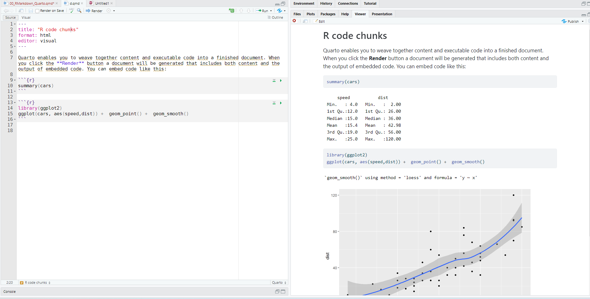
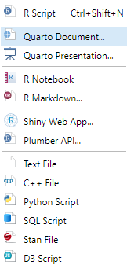
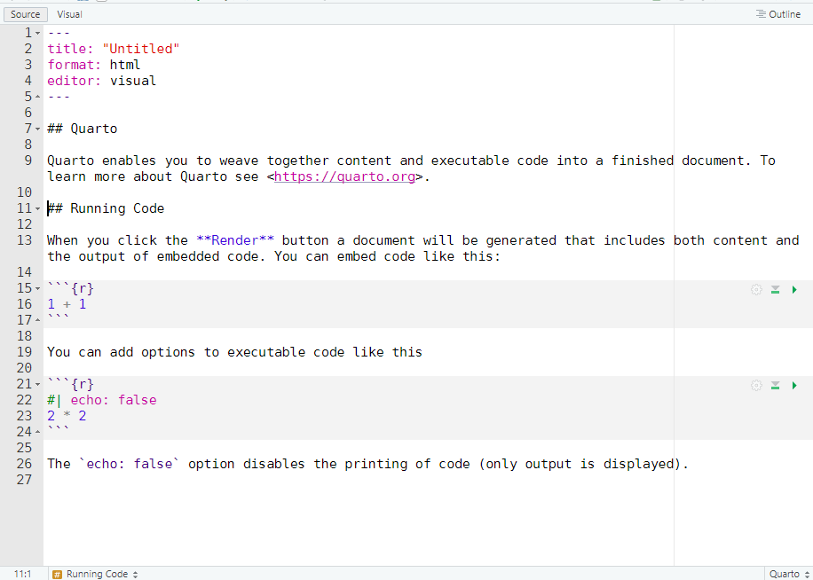
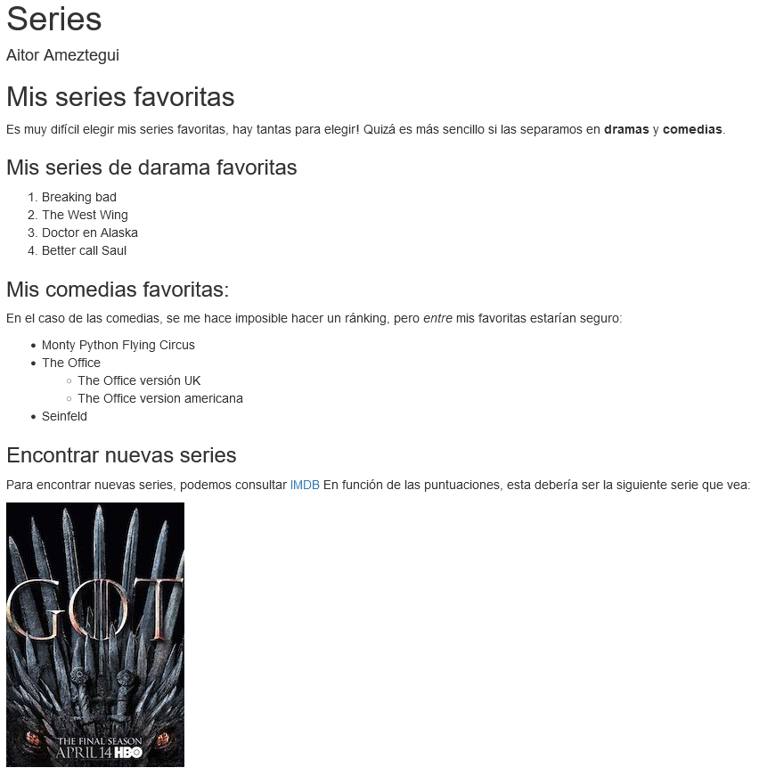
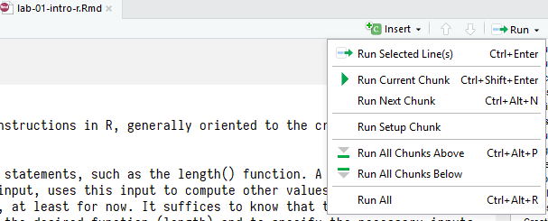
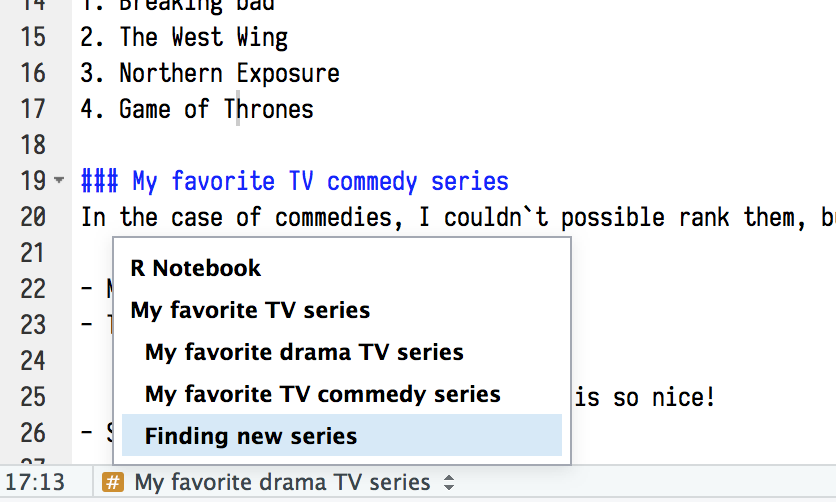
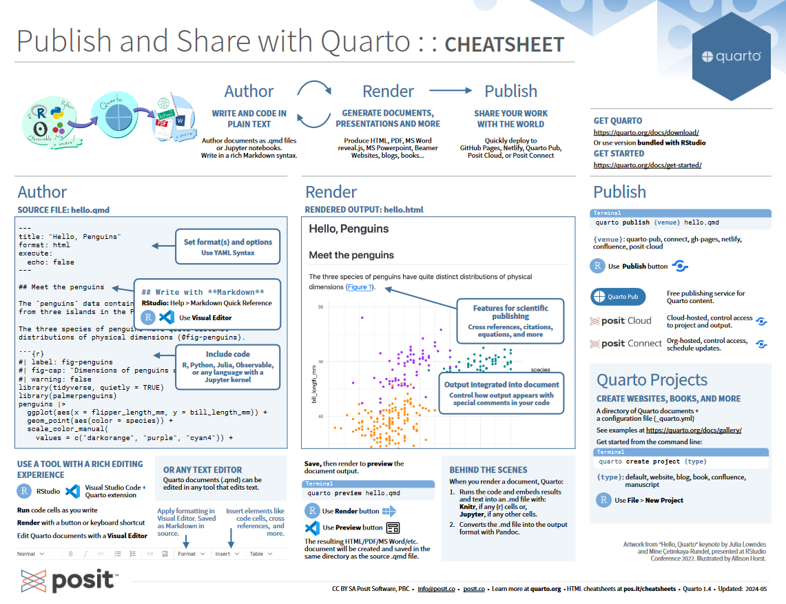

esto es un [ejemplo](http://ejemplo.com)3 Introducción a Quarto y RMarkdown
3.1 Introducción. Objetivo.
El objetivo de este tutorial es introducirte los fundamentos de RMarkdown y Quarto, y ver cómo los puedes usar para combinar código y texto y crear los informes de las prácticas que realizaremos en el curso.
3.2 ¿Qué es Quarto? ¿Y RMarkdown?
Quarto® es un sistema de publicación científica y técnica de código abierto. Puede combinar texto narrativo y código para producir resultados con un formato elegante en forma de documentos, páginas web, entradas de blog, libros y mucho más. Es un formato dinámico, que combina código, los resultados de ejecutarlo, y texto, en un único documento que admite decenas de formatos de salida, como PDF, archivos de Word, presentaciones y más.
Quarto es de código 100% abierto, la versión 1.4 de Quarto está licenciada bajo la Licencia MIT. Quarto supone un paso más en el desarrollo de RMarkdown, un formato de fichero que creó la compañía RStudio (ahora Posit) hace casi 10 años para trabajar con código de R. Sin embargo, Quarto va un paso más allá, ya que añade a las funcionalidades que ya tenía RMarkdown, los más de 10 años de experiencia en su uso, y sobre todo la compatibilidad con otros lenguajes de programación como Julia, Python o JavaScript. Esto le ha dado una vuelta de tuerca a su versatilidad.
RMarkdown, el predecesor de Quarto, fue inicialmente creado para generar documentos que sirvan como registro de los análisis que se ejecutan, un poco como un cuaderno de laboratorio. Así que, en lugar de comentar el código, Quarto lo presenta junto con su salida (figuras, tablas…) y podemos añadir el texto que queramos, e incluso darle formato. Esto puede ser muy interesante en 3 casos:
Para comunicar nuestros resultados a los responsables de la toma de decisiones (gestores, ayuntamientos…), a clientes, socios o al público en general, que estarán interesados en el análisis y las conclusiones, pero no en el código que hay detrás del análisis.
Para colaborar con otros colegas, incluyendo tu yo futuro, que están interesados tanto en tus conclusiones como en cómo has llegado a ellas (es decir, el código).
Para registrar los análisis, como una especie de cuadernos de laboratorio en el que se anote no sólo qué análisis se han hecho, sino también los motivos que llevan a ello.
Sin embargo, la versatilidad de Quarto hace que se pueda ir más allá, generando todo tipo de documentos: desde páginas web, ficheros pdf, presentaciones, libros online, blogs… De hecho, este documento que estás leyendo se ha generado con Quarto.
Quarto se basa en el lenguaje Markdown, un lenguaje de código que permite la conversión texto-HTML. Es un lenguaje en realidad muy básico, por lo que necesitas aprender muy poco código para poder escribir en Quarto.
En el contexto del curso, usaremos Quarto para generar los informes de prácticas, en los que poder mostrar el código que habéis escrito, su salida, así como vuestra interpretación de los resultados y los motivos para optar por una u otra función.
 g){width=100%}
3.3 Usando Quarto en RStudio
Los beneficios de Quarto se aprecian mejor cuando se usa en RStudio. Desde allí resulta muy sencillo crear un nuevo documento Quarto, ya que se carga juntamente. Simplemente debemos clicar en el icono “New File” en la esquina superior izquierda del menú, y seleccionar “Quarto document…”.

La siguiente ventana te pedirá un título, autor, y el formato en el quieras que se genere el documento final. Por defecto hay tres opciones: html, pdf, o word. El más versátil es html, que permite usar plantillas y generar presentaciones, páginas web, etc. De hecho este tutorial está hecho con Quarto. También se pueden usar plantillas con un formato predefinido. Todas estas decisiones se pueden cambiar después. De momento, daremos al documento un título, indicamos el autor, y elijamos “HTML” como formato de salida:
El nuevo fichero Quarto - que es de hecho un fichero de texto plano con la extensión .qmd se debería abrir en el lado izquierdo, encima del panel de consola.

El documento ya tiene algo de contenido, que sirve de ejemplo o “plantilla”. Tiene tres partes:
- Una cabecera YAML en la parte superior, rodeada de dos líneas de tres guiones (
---). Esto controla los metadatos (título, autor, fecha) y el tipo de formato de salida que queremos. Aquí tendremos la información que hayamos introducido antes, y la podremos modificar si queremos hacer cambios a posteriori. - Trozos de código R rodeado de tres guiones
```. Al ejecutar el documento, se ejecutarán estos trozos de código y se mostrará el resultado debajo. - Texto al que se puede dar formato, como por ejemplo ponerlo en
**negrita**o crear## cabeceras.
En un documento .qmd el texto, el código y la salida están intermezclados. Puedes correr cada uno de los trozos de código haciendo click en “Run” (un botón de “play” situado en la parte superior de cada trozo de código), o bien presionando Cmd/Ctrl + Shift + Enter. RStudio ejecutará ese código y mostrará los resultados junto con el código:

Para producir un informe completo que contenga todo el código, texto etc debéis hacer click en “Render” o presionar Cmd/Ctrl + Shift + K. Esto mostrará el informe en el panel de visualización, y creará un archivo - en el formato elegido - con el resultado, que puede ser compartido con otras personas.
3.4 Añadiendo y formateando texto
Formatear texto en Quarto es muy sencillo. Los ficheros .qmd permiten indicar:
- texto en negrita y cursiva
- listas
- secciones y cabeceras (títulos de sección)
- enlaces
- imágenes
- y muchos más…
El texto simple se escribe como cualquier otro documento. Pero formatearlo es igualmente sencillo:
Para insertar un espacio entre párrafos, incluye una línea en blanco.
Para forzar un salto de línea, pon dos espacios en blanco
al final de la línea.Cursiva: pon tu texto entre asteriscos (
*texto en cursiva*) o guiones bajos (_Texto en cursiva_).Negrita: pon el texto entre dos asteriscos (
**ejemplo negrita**) o dos guiones bajos (__texto en negrita__).Superíndice: debes rodear el texto entre
^como aquí:X^2^.También podemos hacer que el texto aparezca como código así:
codeCabeceras de sección se pueden añadir poniendo el símbol del hashtag
#antes del título (y dejando un espacio). Cuantos más # pongas, menor será el texto (nivel inferior)
# Título nivel 1
## Título nivel 2
### Título nivel 3- También podemos crear listas muy fácilmente. Las listas sin orden se crean con
-,*o+, y las listas ordenadas con números.
# Lista sin orden
- Item 1
- Item 2
- Item 2a
- Item 2b
- Item 3
# Lista ordenada
1. Primer item
2. Segundo item
3. Tercer item- Los Enlaces se asocian a un texto poniendo el texto entre corchetes
[]y el enlace entre paréntesis():
- Para insertar imágenes (no generadas por código) empezaremos con un signo de exclamación
!y luego el pie de foto, y finalmente la ruta a la imagen (respecto al directorio de tu documento.qmd) o la URL en el caso de una imagen externa. Aquí hay dos ejemplos, uno por una imagen local y el otro para una imagen externa


3.5 Documentos formateados
Podemos ver un ejemplo de formateado completo:
## Mis series favoritas
Es muy difícil elegir mis series favoritas, hay tantas para elegir!
Quizá es más sencillo si las separamos en **dramas** y **comedias**.
### Mis series de darama favoritas
1. Breaking bad
2. The West Wing
3. Doctor en Alaska
4. Better call Saul
5. The Expanse
### Mis comedias favoritas:
En el caso de las comedias, se me hace imposible hacer un ránking, pero *entre* mis favoritas estarían seguro:
- Monty Python Flying Circus
- The Office
- The Office versión UK
- The Office version americana
- Seinfeld
### Encontrar nuevas series
Para encontrar nuevas series, podemos consultar [IMDB](https://www.imdb.com/chart/toptv/)
En función de las puntuaciones, esta debería ser la siguiente serie que vea:
El resultado de este código sería:

Editor Visual de Quarto en RStudio
Cuando abrimos un documento Quarto en RStudio, veremos que arriba se nos muestran 2 pestañas: “Source” y “Visual”. La primera nos permite visualizar el documento con el texto en formato Markdown. Es decir, veremos el texto formateado de la manera que hemos visto hasta ahora, y sólo veremos el resultado cuando ejecutemos el fichero. En la segunda opción, “Visual”, RStudio nos ofrece una interfaz visual WYSIWYG, donde puedes utilizar los botones de la barra de menú para formatar el texto, insertar imágenes, tablas, referencias cruzadas, etc. o puedes utilizar el atajo de teclado ⌘ + / o Ctrl + / para insertar casi cualquier cosa.
Lo más importante es que, aunque el editor visual muestra el contenido con formato, en realidad guarda el contenido en Markdown sin formato y puedes alternar entre el editor visual y el de código fuente para ver y editar el contenido con cualquiera de las dos herramientas. Aunque al principio es lógico usar el editor visual, mi consejo es acostumbrarse a editar el documento de la forma tradicional, o al menos a alternar ambos, ya que eso nos dará un mayor control sobre lo que hacemos, y nos permitirá aprender el lenguaje Markdown, lo que puede ser útil para otras situaciones.
EJERCICIO:
Descargad el fichero comprimido “series.zip”, abrid
series.qmd, que contiene el código de arriba, y ejecutadlo. Comprobad que el resultado corresponde con lo que esperabais.Usando lo que habéis aprendido hasta ahora, cread un nuevo fichero Quarto, y generad un documento corto que contenga texto formateado, similar a
series.qmd. El tema es libre, pero incluid al menos algo de texto en negrita, en cursiva, algunas cabeceras, una lista y un enlace. Guardadlo como ejercicio_quarto.qmd y ejecutadlo.
3.6 Usando código en Quarto (chunks)
Para ejecutar código en un documento Quarto, debemos especificar que el texto que viene a continuación es código. Esto lo hacemos creando un trozo de código, también llamado “chunk”, que no es más que un fragmento de código que tiene entidad propia, es decir, que puede ser ejecutado y hace algo. Está precedido por ```{r} debe comenzar en una linea nueva, y acaba con tres “acentos graves``` . El código como tal va en medio. Aquí vemos como ejemplo un código que genera 1000 números aleatorios según una distribución normal de media = 0 y sd = 1, y después genera un histograma con esos números:
```{r}
numbers <- rnorm(1000, mean = 0, sd = 1)
hist(numbers)
```Este código genera esta salida:

Fijaos como el código que hemos escrito se incluye en el fichero de salida, con un formato similar al que vemos en R. También se incluye el resultado del código, debajo del mismo. Esto es muy útil porque nos permite ver en un mismo lugar el código que hemos generado, y su resultado.
3.6.1 Crear chunks
Para ejecutar código dentro de un documento Quarto, debemos incluirlo en un chunk. Hay tres maneras de crear un chunk:
Las teclas Cmd/Ctrl + Alt + I
El botón “Insert” en la barra de editor (sólo en la pestaña
Visual)Tecleando a mano los delimitadores
```{r}para comenzar el chunk y```para cerrarlo.
Independientemente de cómo lo creemos, tiene este aspecto:
```{r}
```Y una vez creado, podemos teclear dentro el código que queramos:
```{r}
norm <- rnorm(100, mean = 0, sd = 1)
```Es importante señalar que el código dentro de un chunk se comporta como código “normal” de R. Eso quiere decir que cualquier objeto o paquete que sea necesario para ejecutar el código se tendrá que haber cargado en la sesión antes de intentar ejecutarlo. Lo mismo pasa con los datos, que se deben cargar antes de trabajar con ellos.
El chunk tiene una cabecera, y dentro de las llaves ({}) es donde se especifica el lenguaje de programación (recuerda que Quarto funciona con R, Python, Julia…). Puedes ejecutar cada chunk individualmente en cualquier momento situando el cursos dentro del mismo y clickando Run > Run Current Chunk (la flecha verde en la parte de arriba a la derecha). La salida se muestra justo debajo del chunk.

También podemos ejecutar todos los chunks a la vez. o todos los chunks por encima del actual. En cualquier caso, el código R de cada chunk se evalúa y ejecuta en orden al hacer “Render” en el documento. Si alguno de los chunks produce un error, R nos avisará, y el documento de salida no se generará.
3.6.2 Etiquetando los chunks
Como hemos descrito antes, la cabecera del chunk consiste en ``{r}, seguido por una etiqueta opcional del chunk y varias otras opciones del chunk, cada una en su propia línea, marcada por#|`. Por ejemplo, podemos dar un nombre al chunk:
1 + 1[1] 2Aunque no sea obligatorio, etiquetar los chunks es una buena práctica, ya que nos permite navegar entre los chunks en el menú de la derecha.

3.6.3 Opciones de los chunks
El comportamiento de los chunks se puede personalizar con opciones, que no son más que argumentos que podemos dar en la cabecera del chunk, cada uno en su linea, y empezando con #|. Hay casi 60 opciones diferentes, aquí solo mencionaremos las más importantes. El resto las podéis ver aquí: https://yihui.org/knitr/options/.
Las opciones más importantes controlan si el código del chunk se ejecuta y si se incluyen o no los resultados:
eval: falsehace que el código no se evalúe (es decir, que no se ejecute, y por lo tanto no genere resultados). Es una manera cómoda de desactivar trozos largos de código (por ejemplo, análisis que al final descartamos, pero que queremos dejar por si acaso).include: falsehace que ni el código ni el resultado se muestren en el documento final. Sin embargo, sí que ejecuta el código en la sombra, de manera que los resultados se pueden usar por los siguientes chunks. Esto es útil, por ejemplo, para cargar datos y paquetes.echo: falseel resultado aparecerá, pero el código que lo generó no. Es útil para escribir informes destinados a gente que no está interesada en ver el código que hemos usado, pero si los resultados.message: falseowarning: falseimpide que aparezcan en el resultado final mensajes de error o avisos
Cada una de estas opciones de chunk se añade a la cabecera del chunk, siguiendo a #|, por ejemplo, en el siguiente chunk el resultado no se imprime ya que eval: false:
2 * 23.7 Figuras
Si un chunk prodice una figura, esta se mostrará inmediatamente debajo del chunk, y Quarto maximizará su altura, cumpliendo con los márgenes del documento y manteniendo el ratio de altura/anchura. Por lo tanto, algunas figuras pueden resultar enormes en el documento final. Para cambiar manualmente las dimensiones, podemos insertar instrucciones en la cabecera del chunk:
```{r}
#| fig-width: 4
#| fig-height: 3
norm <- rnorm(100, mean = 0, sd = 1)
hist(rnorm)
```3.8 Tablas
Por defecto, Quarto imprime los data frames y las matrices como las verías en la consola:
```{r}
iris[1:5, ]
``` Sepal.Length Sepal.Width Petal.Length Petal.Width Species
1 5.1 3.5 1.4 0.2 setosa
2 4.9 3.0 1.4 0.2 setosa
3 4.7 3.2 1.3 0.2 setosa
4 4.6 3.1 1.5 0.2 setosa
5 5.0 3.6 1.4 0.2 setosapara darles formato adicional, se puede usar la función kable() del paquete knitr()
library(knitr)
kable(iris[1:5, ],
caption = "Una tabla hecha con knitr. Queda mejor, ¿no?"
)| Sepal.Length | Sepal.Width | Petal.Length | Petal.Width | Species |
|---|---|---|---|---|
| 5.1 | 3.5 | 1.4 | 0.2 | setosa |
| 4.9 | 3.0 | 1.4 | 0.2 | setosa |
| 4.7 | 3.2 | 1.3 | 0.2 | setosa |
| 4.6 | 3.1 | 1.5 | 0.2 | setosa |
| 5.0 | 3.6 | 1.4 | 0.2 | setosa |
Hay numerosos paquetes destinados a generar tablas de alta calidad con R. Algunos son:
EJERCICIO:
Ahora que sabéis como producir un documento Quarto completo, quiero que créeis uno usando el dataset mtcarsque viene cargado por defecto en R. Este dataset contiene datos de consumo de combustible y otras 10 variables de diseño y prestaciones de 32 modelos de coche. Tiene por tanto 32 filas y 11 columnas. Teclea ?mtcars en la consola para saber más del dataset y de las variables que contiene.
3.9 Para saber más
Quarto es aún relativamente reciente, pero está creciendo muy muy rápido debido a su versatilidad. El mejor sitio para estar al día de las novedades es su página oficial: https://quarto.org/. Incluye una Guía de Quarto.
RStudio también produce “chuletas” para la mayoría de sus productos, y Quarto no es una excepción. Incluye las principales funciones en un formato compacto, para tenerlo siempre a mano. Podéis encontrarlo aquí
